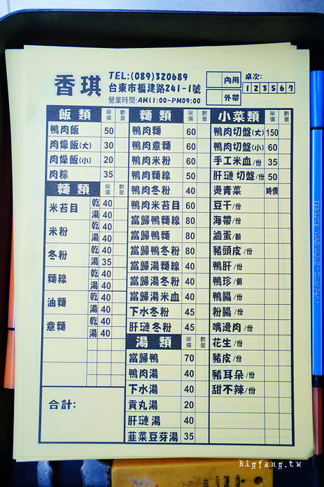
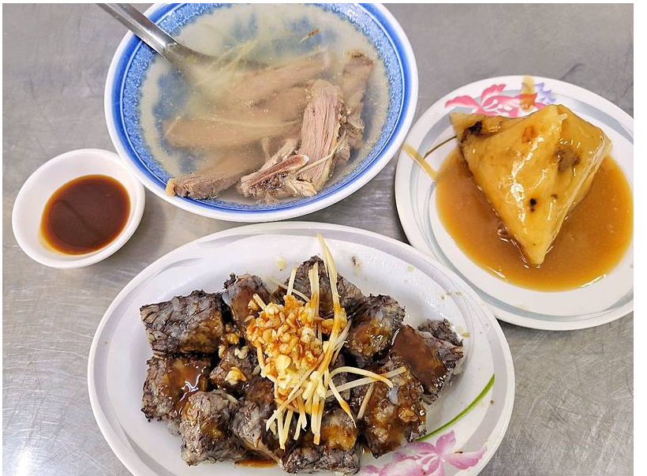
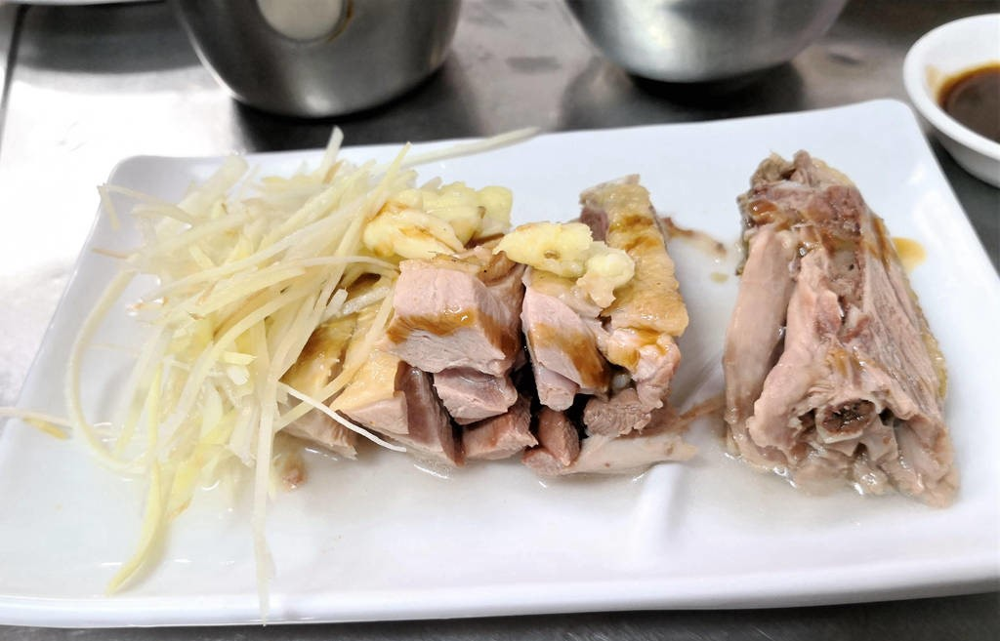
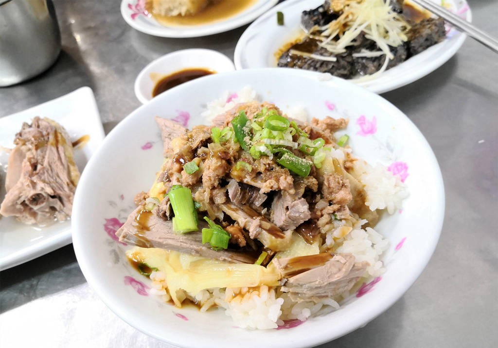

菜單與圖片:




台東「香琪鴨肉」藏身巷內，位於台東市復興路、福建路交叉口。 在地人每到用餐時間都會來買外帶，用餐時間一位難求。好吃便宜又划算的鴨肉飯/麵、當歸鴨系列、鴨肉切盤、米血糕等等，是絕對一試的台東小吃美食， 而且「香琪鴨肉」在台東市區營業超過一甲子，很多觀光客也不知道，也是除了台東米苔目之外的最佳選擇唷。 在店裡可以看到關於「香琪鴨肉」的介紹：初期阿公在台東擺攤做生意，一開始生意並不是太理想，在幾次碰壁和改良之後，生意才逐漸好起來。 「香琪鴨肉」目前已經傳承第三代經營，較難能可貴的是，第三代是三妹姐，因為體恤母親一個人經營的辛苦，所以全部留下來陪著母親一起經營。 來到台東，不妨試試「香琪鴨肉」。